1. 概述
1.1. 目的
本文档提供Rokid AI Dev Board v3.31 KAMINO18的硬件连接指南。
1.2. 使用范围
适用于快速导入Rokid AI Dev v3.31平台设计生产智能语音产品。
2. KAMINO18
2.1. 概述
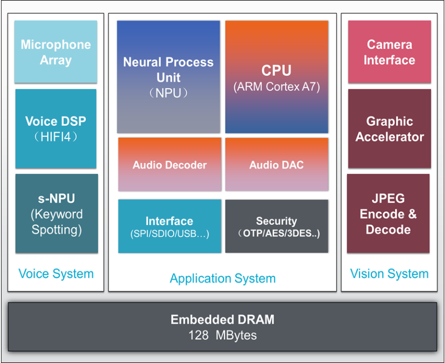
2.2. 芯片简介
① 支持2/4/6/8路麦克风阵列
② 集成8通道ADC/I2S/PDM，支持模拟麦和数字麦
③ 内置DSP，支持降噪，AEC，Beamforming，去混响等算法
④ 低功耗离线语音激活
⑤ 离线语音识别
⑥ 超低功耗待机，支持电池供电
⑦ 对接主流语音云平台
⑧ Linux操作系统
⑨ 典型配置：128MB SPI NAND Flash + 内置 128MB DDR
3. ROKID AI DEV V3.31硬件平台简介
3.1. 系统设计框图
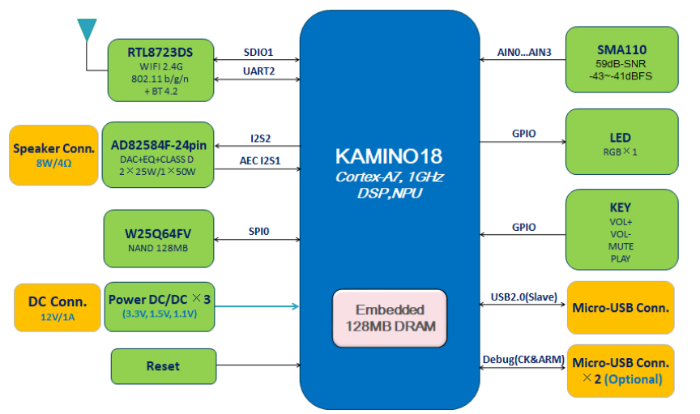
Rokid AI Dev v3.31平台是面向智能语音产品设计的低成本硬件参考方案。方案采用12V/1A适配器供电，整个方案只需要3颗DCDC就提供了整个系统的供电需要。 由于KAMINO18封装采用了0.8mm pin间距BGA封装，并内置了128MB DDR3， 使得整个方案可以使用2层PCB通孔工艺完成布线，极大地降低了PCBA成本，减少了PCB板子的加工的周期。
Rokid AI Dev v3.31平台采用4颗模拟麦阵列语音输入，采用COB方式的RTL8723DS WIFI/BT方案，Codec芯片采用ESMT 1×50W单声道驱动能力的AD82584F，并采用IIS AEC回采方式。通过ADB(USB2.0 Slave)或UART(Micro USB接口)调试主芯片及各外设，方便用户开发调试。
3.2. 关键器件列表
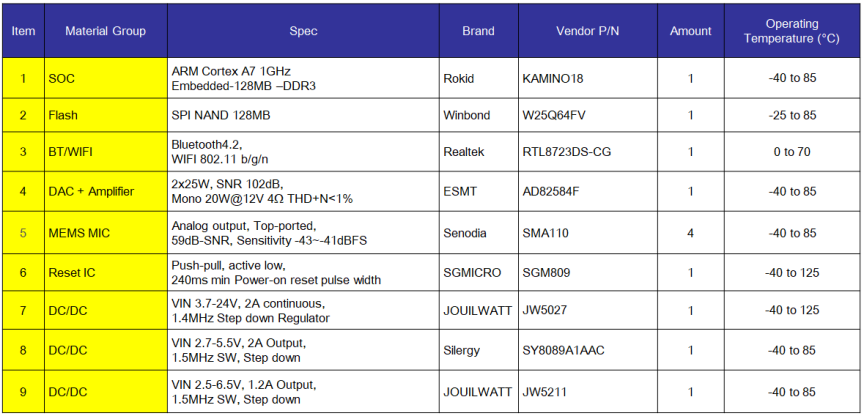
3.3. 硬件开发板接口说明
ROKID AI Dev Board v3.31整机外形图如下：
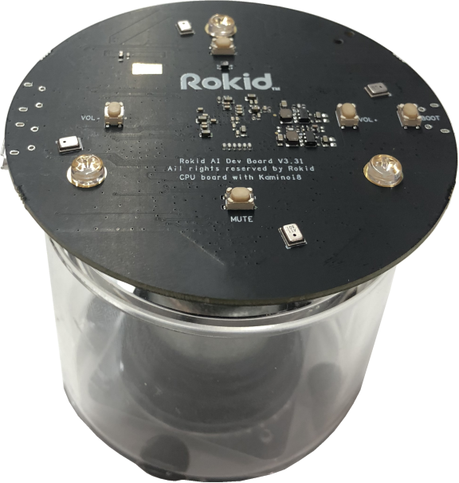
ROKID AI Dev Board v3.31硬件接口如下：
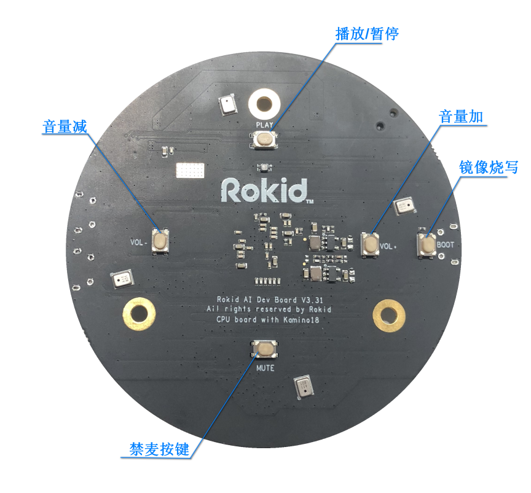
图 5 ROKID AI Dev v3.31 PCBA TOP
ROKID AI Dev v3.31 PCBA TOP层接口定义：
序号 | 接口名称 | 说明 |
1 | 播放/暂停 | 音乐播放、暂停按键 |
2 | 音量加 | 音量增加按键 |
3 | 音量减 | 音量减少按键 |
4 | 禁麦按键 | 禁止麦克风按键 |
5 | 镜像烧写 | 镜像烧录、升级按键 |
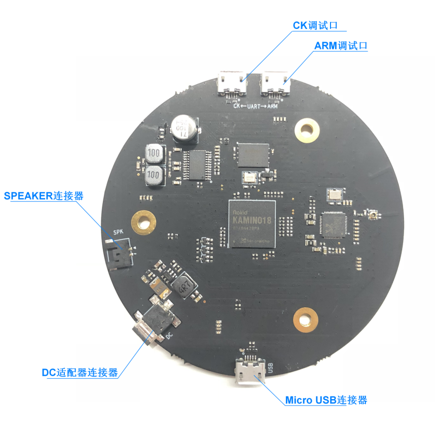
图 6 ROKID AI Dev v3.31 PCBA Bottom
ROKID AI Dev v3.31 PCBA Bottom层接口定义：
序号 | 接口名称 | 说明 |
1 | DC适配器连接器 | 12V/1A DC适配器接口 |
2 | SPEAKER连接器 | 音腔连接器 |
3 | Micro USB连接器 | USB Slave micro USB 接口 |
4 | ARM 调试口 | ARM UART信号，micro USB 接口 |
5 | CK 调试口 | CK UART信号，micro USB 接口 |
4. 开发板使用说明
4.1. 开机
ROKID AI Dev v3.31开发板外部连接非常简单，插入12V/1A DC 适配器即自动开机。
4.2. 烧写Image与SN
1. 安装设备驱动
A. 将microUSB 线一端连到开发板USB Slave接口，另一端插入PC；
B. 按下开发板上的BOOT按键，然后插入12V/1A 适配器。此时，PC端设备管理器里会出现一个Nationalchip Storage设备带黄色感叹号安装驱动；
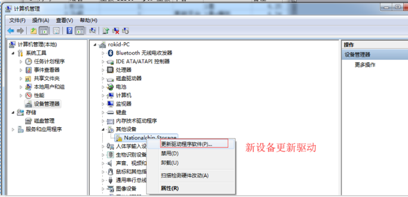
打开镜像烧写工具安装包找到 zadig-2.3.exe
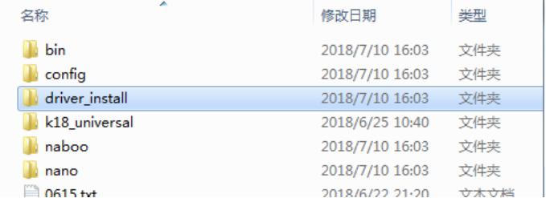
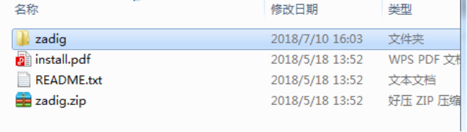
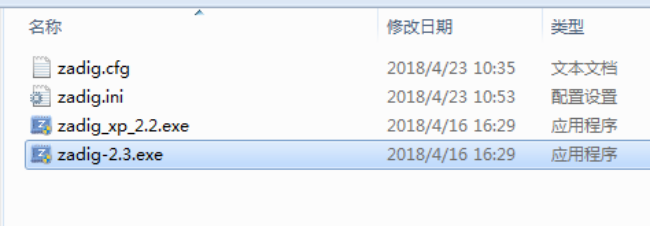
点击安装。此时可以释放BOOT按键。

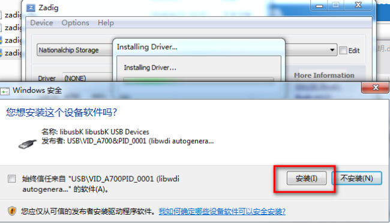
等待几分钟，安装完成
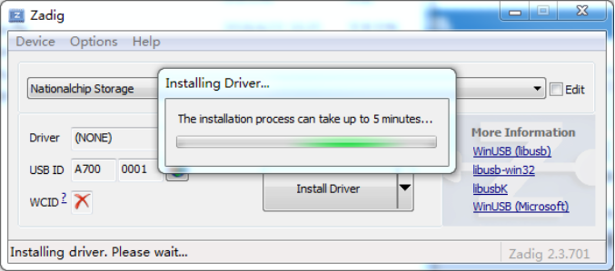
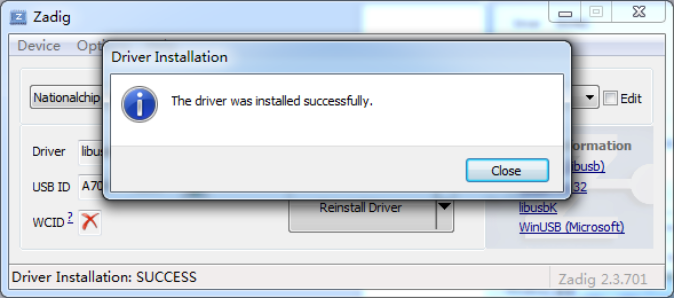
驱动安装完毕后，出现新的存储设备。

2. 烧写镜像
A. 打开WINDOWS镜像烧写工具 NCDownloader.exe，配置文件烧写路径，完成后保存。
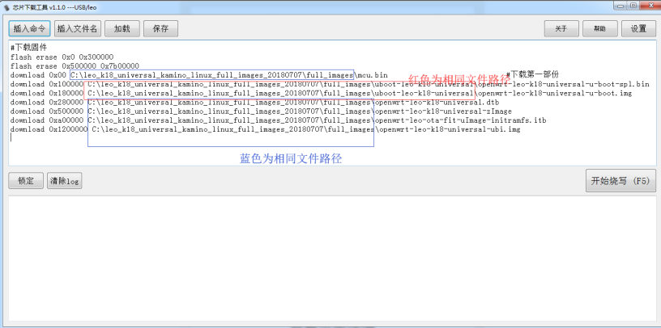
B. 按下BOOT按键，重新插拔一次12V/1A DC适配器，然后点击 开始烧写(F5)
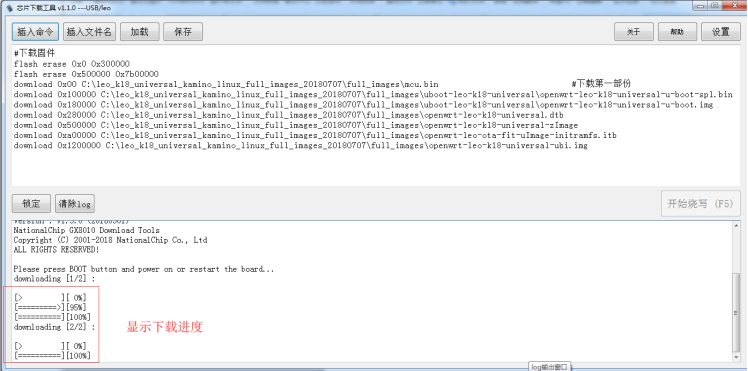
此时，可以释放BOOT按键，烧写过程会继续，直到烧写完成。
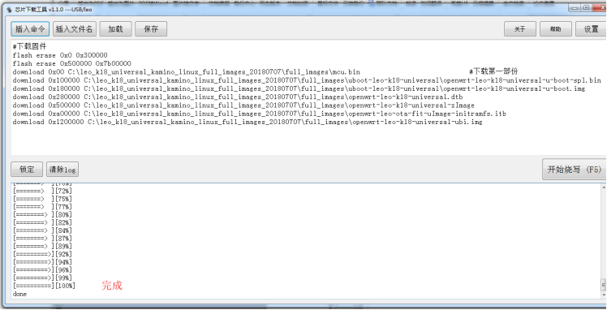
3. 烧写SN
A. 将microUSB 线一端连到开发板USB Slave接口，另一端插入PC；
B. 插入12V/1A 适配器，开发板自动开机；
C. Windows运行界面输入”cmd”，进入命令提示符界面：
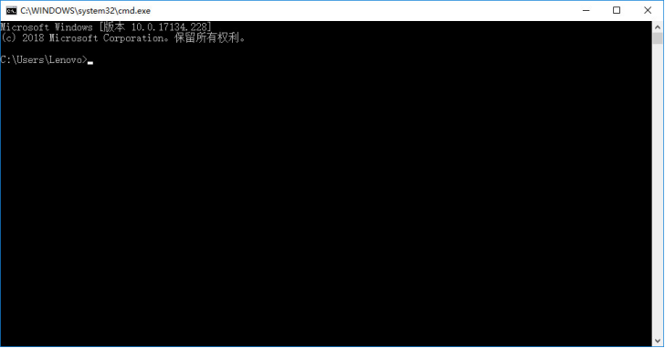
D. 输入”adb shell” –> “factory 0 0”, 开发板会重启，进入FTM模式

E. 开发板重启完成后，再次输入”adb shell”
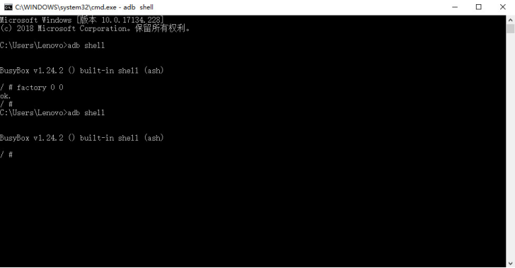
F. 依次输入 ”factory 9 1 SEED”
-> “factory 9 3 SN”
-> “factory 9 5 ID”, 完成SN的烧录。
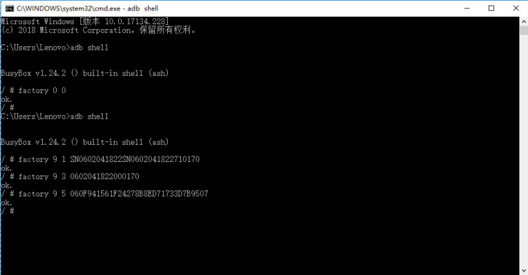
G. 烧写完成SN之后，一定要输入 “factory 0 3”，退出FTM模式。
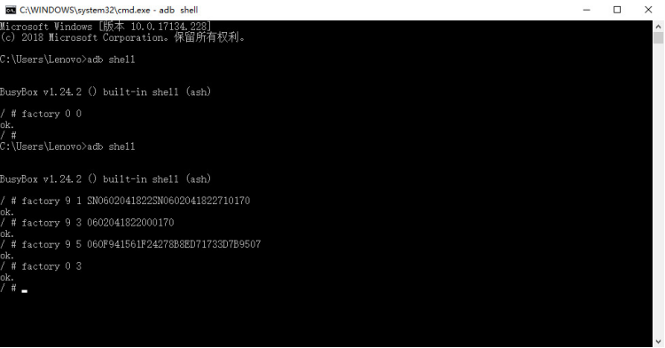
H. 至此，SN烧录步骤完成。设备自动重启，进入配网模式。